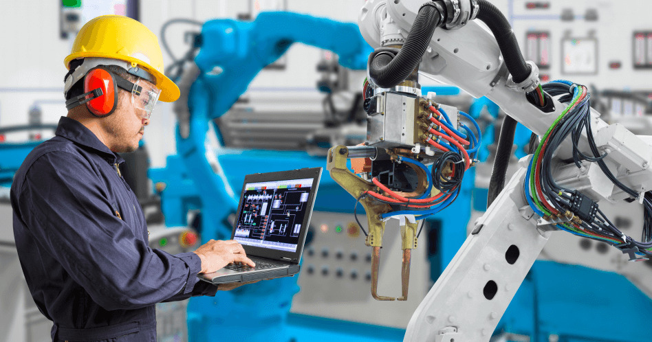
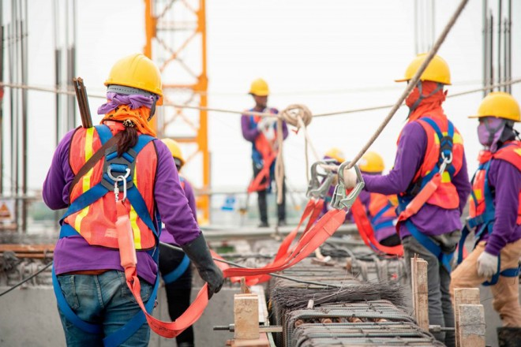

A Etec Lins conta com várias modalidades de ensino médio, para melhor atender os alunos de Lins e Região e sempre manter a excelência.
Ensino Médio com Habilitação Profissional em Técnico em Desenvolvimento de Sistemas
Descrição
É o profissional que analisa e projeta sistemas. Constrói, documenta, realiza testes e mantém sistemas de informação. Utiliza ambientes de desenvolvimento e linguagens de programação específica. Modela, implementa e mantém bancos de dados.
Ensino Médio com Itinerário Formativo Linguagens, Ciências Humanas e Sociais
Descrição
As aulas do Ensino Médio com ênfase em Linguagens, Ciências Humanas e Sociais são realizadas em meio período (manhã ou tarde). As competências da Base Nacional Comum Curricular (BNCC) são organizadas de acordo com as especificidades do curso. Ao optar por essa modalidade, o aluno tem a oportunidade de se aprofundar em linguagem oral e escrita, exercitar capacidades intelectuais e expressivas, aprender a língua materna e idiomas estrangeiros, bem como estudar o homem do ponto de vista social, cultural e histórico. Ao concluir o Ensino Médio com ênfase em Linguagens, Ciências Humanas e Sociais o estudante poderá prosseguir estudos em nível superior preferencialmente nas áreas de: Administração, Arquitetura e Humanismo, Artes, Audiovisual, Ciências da Informação e Comunicação, Ciências Humanas e Sociais, Comércio Exterior, Comunicações, Design, Direito, Economia, Eventos, Filosofia, Fotografia, Geografia, História, Letras, Marketing, Moda, Multimídia, Pedagogia, Produção Cultural, Psicologia, Publicidade, Secretariado, Sociologia, Turismo e Hospitalidade, entre outras.
Técnicos
Técnico em Administração
A Etec Lins conta com o tradicional curso de Técnico em Administração, para melhor atender os alunos de Lins e Região e sempre manter a excelência.
Descrição
Como funcionam as organizações, desde empresas privadas até ONGs, passando por órgãos públicos, comércio e indústria. O estudante vai precisar de conhecimentos de língua portuguesa, matemática, história e geografia para compreender os principais assuntos do curso, como história da administração, evolução das organizações ao longo do tempo, contabilidade, leis que regulam o funcionamento das empresas e redação de documentos. O aluno vai aprender ainda a analisar as chances de um negócio ou produto ser bem-sucedido e o comportamento do consumidor. Estudará também técnicas de atendimento ao cliente, empreendedorismo (iniciativas para realizar novos negócios) e como uma organização planeja alcançar seus objetivos e define suas metas para o futuro.
Técnico em Edificações
Descrição
As principais disciplinas do curso são Desenho, para elaboração e desenvolvimento de projetos de engenharia e arquitetura, Tecnologia dos Materiais de Construção, para selecionar e controlar a qualidade dos materiais, Tecnologia das Construções, para supervisionar e aprimorar os processos de construção, Planejamento e Controle das Obras, para assegurar o cumprimento dos prazos e custos. Entre outras disciplinas, o aluno utiliza Matemática, para calcular proporções, áreas e volumes, e Química, para o aluno entender as propriedades dos materiais.
Atuação
Em escritórios, auxilia e elabora projetos de arquitetura e engenharia civil, dentro dos limites regulamentados. Em obras, atua no planejamento e fiscalização das obras de construção civil. Também pode trabalhar com assessoria técnica, consultor de tecnologias ou na prestação de serviços de manutenção e reparos prediais.
Técnico em Enfermagem
A Etec Lins conta com o tradicional curso de Técnico em Enfermagem, para melhor atender os alunos de Lins e Região e sempre manter a excelência.
Descrição
O aluno aprende técnicas para auxiliar na recuperação de um paciente, assim como a prevenção de doenças, orientação para exames, entre outros procedimentos. O curso tem base na biologia, para aprender sobre o corpo humano; na matemática, para cálculos de medida para medicações; na física, para entender os riscos que o paciente corre, como a velocidade de uma batida de um veículo para entender os tipos de lesões possíveis, por exemplo; e português, para escrever corretamente no prontuário do paciente.
Técnico em Logística
A Etec Lins conta com o atual curso de Técnico em Logística, para melhor atender os alunos de Lins e Região e sempre manter a excelência.
Descrição
Logística é o planejamento do caminho feito por um produto ou serviço até chegar ao cliente de forma organizada, rápida e econômica. Para planejar esse caminho, o estudante vai precisar de conhecimentos de matemática, geografia e física. O aluno aprenderá sobre os processos de compra de matérias-primas, incluindo a escolha dos fornecedores, o registro dos pedidos de compra e o recebimento dos materiais adquiridos. O estudante vai aprender também como se deve movimentar as cargas e os produtos dentro de um estoque para decidir se utilizará, por exemplo, um carrinho ou uma empilhadeira, e como se deve armazenar cada tipo de produto e por quanto tempo. Vai estudar ainda sobre a entrega das mercadorias compradas pelos clientes: como organizar a carga para o transporte, qual a embalagem mais adequada (em caixas de papelão ou madeira, em páletes ou contêineres), qual é o tipo de transporte mais adequado para o produto e para o cliente (caminhões, embarcações, trem ou avião), e quais são as principais rotas que podem ser utilizadas. Além disso, o estudante aprenderá sobre os custos envolvidos em cada uma das atividades.
Técnico em Manutenção e Sup. em Informática
A Etec Lins conta com o atual curso de Técnico em Manutenção e Suporte em Informática, para melhor atender os alunos de Lins e Região e sempre manter a excelência.
Descrição
O estudante vai aprender como instalar, configurar e realizar a manutenção de computadores e seus periféricos, como impressoras, no-breaks e drives, entre outros, utilizando conhecimentos de Informática e de Eletrônica. Na área de computação, o aluno vai estudar configuração de sistemas operacionais, estrutura dos computadores e do cabeamento de redes, linguagem de programação e de banco de dados e procedimentos para segurança da informação. Conceitos de matemática e física também estarão presentes ao longo do curso como base para o aprendizado de lógica, programação, eletricidade e eletrônica. Para completar a formação, o estudante aprenderá sobre empreendedorismo e organização de tarefas para a realização de projetos de manutenção.
Técnico em Marketing
A Etec Lins conta com o atual curso de Técnico em Marketing, para melhor atender os alunos de Lins e Região e sempre manter a excelência.
Descrição
O estudante vai aprender que marketing é mais do que publicidade. É um processo que começa por entender as necessidades do consumidor para desenvolver produtos, serviços e ideias que serão comercializados. Para estudar esse assunto, o aluno vai precisar de conhecimentos de língua portuguesa, geografia e matemática. O estudante vai aprender a definir o público-alvo de cada produto ou serviço, assim como aprenderá a analisar esse processo de aproximação e troca entre vendedores e compradores. O aluno estudará, ainda, as formas de utilizar as ferramentas de comunicação, como publicidade, telemarketing, promoção de vendas etc. No curso, o estudante vai aprender também a criar logotipos, rótulos e embalagens. Administração de empresas, Legislação (como o Código de Defesa do Consumidor) e Inglês e Espanhol para leitura de textos completam a formação técnica em Marketing.

Técnico em Mecatrônica
A Etec Lins conta com o atual curso de Técnico em Mecatrônica, para melhor atender os alunos de Lins e Região e sempre manter a excelência.
Descrição
É o curso que forma o profissional que atua no projeto, na execução, na instalação e na manutenção de máquinas e equipamentos automatizados e sistemas robotizados. Ele também opera equipamentos, utiliza softwares específicos e linguagens de programação adequadas; coordena equipes e oferece treinamento operacional; programa e opera máquinas; realiza manutenções preditiva, preventiva e corretiva, em conformidade com as normas técnicas.
Técnico em Química
A Etec Lins conta com o tradicional curso de Técnico em Química, para melhor atender os alunos de Lins e Região e sempre manter a excelência.
Descrição
A matemática é utilizada para a base de cálculos. A físico-química também é uma disciplina importante no curso. O aluno aprenderá a manipular instrumentos como microscópio, balança analítica e outros equipamentos voltados a análises químicas. Outro ponto importante é o entendimento sobre a tecnologia de processos industriais, onde os alunos aprendem a transformação química e a evolução da matéria-prima até o produto final.
Técnico em Recursos Humanos
A Etec Lins conta com o atual curso de Técnico em Recursos Humanos, para melhor atender os alunos de Lins e Região e sempre manter a excelência.
Descrição
O estudante vai precisar de conhecimentos de língua portuguesa, matemática e história para compreender o curso e aprender a realizar as tarefas sob a responsabilidade do setor de Recursos Humanos de uma empresa, como contratação, demissão e aposentadoria de funcionários e oferta de benefícios (vale-transporte, plano de saúde, vale-refeição etc.), entre outras atividades. Por isso, será importante também estudar as leis que regulam os direitos e deveres do empregador e dos empregados (legislação trabalhista). O estudante vai aprender ainda noções de psicologia para entender como as pessoas se relacionam no ambiente de trabalho, realizar processos de recrutamento e seleção de novos funcionários e promover ações de motivação.
Técnico em Secretariado
A Etec Lins conta com o atual curso de Técnico em Secretariado, para melhor atender os alunos de Lins e Região e sempre manter a excelência.
Descrição
O estudante vai aprender noções de administração, para compreender o funcionamento das empresas, e reforçar conhecimentos de língua portuguesa e inglês, para a redação de documentos técnicos e administrativos. O aluno estudará ainda sobre os tipos de documentos utilizados em uma empresa e maneiras de organizar e arquivar cada um. Completam a formação o estudo de técnicas de atendimento ao cliente, planejamento de eventos (como reuniões, simpósios etc.), e informática.

Técnico em Segurança do Trabalho
A Etec Lins conta com o atual curso de Técnico em Segurança do Trabalho, para melhor atender os alunos de Lins e Região e sempre manter a excelência.
Descrição
Técnicas para prevenir doenças e acidentes de trabalho são o foco do curso. Além do português para interpretar leis e as normas obrigatórias no ambiente de trabalho, o estudante aprenderá física para estudar o ruído e a vibração das ferramentas e equipamentos utilizados pelos funcionários da empresa. A matemática para a avaliação dos riscos ambientais também é uma disciplina básica para a compreensão do curso. O aluno vai aprender primeiros socorros e combate a incêndio.
Técnico em Serviços Jurídicos
A Etec Lins conta com o atual curso de Técnico em Serviços Jurídicos, para melhor atender os alunos de Lins e Região e sempre manter a excelência.
Descrição
Como o foco do curso está nas leis e normas, o aluno vai estudar as áreas do Direito. Vai aprender sobre a Constituição Federal (direito constitucional), a punição aos crimes (direito penal), as regras para relações e disputas entre as pessoas e também as normas para disputas e questões familiares (direito civil), o funcionamento dos órgãos públicos (direito administrativo), as regras para os negócios entre empresas e pessoas (direito empresarial), como deve ser a relação entre patrão e empregado, considerando direitos e deveres de cada um (direito do trabalho), cobrança de tributos, como os impostos (direito tributário) e a proteção garantida aos consumidores (direito do consumidor), entre outros assuntos. O estudante vai conhecer também como são elaborados e redigidos os processos, contratos e documentos jurídicos. Além de aprender sobre as leis, o aluno vai estudar conceitos de administração de empresas, matemática financeira, técnicas de atendimento ao cliente e inglês instrumental. A língua portuguesa é fundamental.